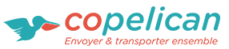

<md-toolbar layout="row" layout-align="center" style="height:10px;">

  <section flex layout="row" layout-align="start">
    <a href="http://copelican.fr">
      
    </a>
  </section>

  <section flex layout="row" layout-align="end">
    <md-button height="5px" href="http://copelican.fr/annonce-expediteur/" class="orange">Expéditeur</md-button>
    <md-button height="5px" href="http://copelican.fr/annonce-voyageur/" class="blue">Voyageur</md-button>
    <md-button height="5px" href="http://copelican.fr/" class="grey">Notre concept</md-button>
    <md-button height="5px" href="http://copelican.fr/index.php/contact/" class="grey">Contact</md-button>

   <!-- <div ng-app="connectionDialog" ng-controller="DialogController"> TODO relier ce bouton au script ConnectionDialog
      <div class="md-padding" id="popupContainer" ng-cloak>
        <div class="connection-dialog" layout="row" layout-wrap layout-margin layout-align="center">-->
          <a class="connection-button" ng-click="showConnectionDialog($event)">
            <i class="material-icons">perm_identity</i> <!-- alternative :  account_circle  -->
          </a>
      <!--    </div>
        </div>
      </div>-->

    <a href="https://www.facebook.com/copelican/">
      <i class="fa fa-facebook-official blue"></i> <!-- alternative : fa-facebook-square ; fa-facebook -->
    </a>
    <a href="https://twitter.com/copelican_com">
      <i class="fa fa-twitter blue"></i> <!-- alternative : fa-twitter-square -->
    </a>
  </section>

</md-toolbar>